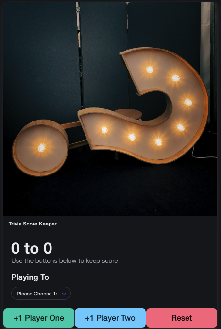
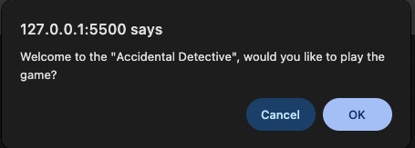

About Me
Where I'm From
As a young adult I used to answer this question with 'I'm from NYC.' to avoid judgment but now I welcome that judgment. The correct answer to the question now is, I'm a Bronx Native that grew up in a two bedroom apartment with my Mom, Step-dad, and Sister. My childhood apartment is in the Hunts Point area and I'd claim this fact any day.
Where My Career Started
My career started far away from Software Engineering at the Lehman College Campus where I received my Bachelor's Degree in Psychology and Creative Writing, followed by a Master's Degree in Education. It was with my Master's Degree that I was blessed with the opportunity to teach Middle School Students for 6 years before my personal goals shifted. I had the absolute pleasure of teaching 6th, 7th, and 8th graders English Language Arts all in the same school year.
The Why Behind My Career Change
While my love for my students still remains my personal goals shifted. After teaching during the pandemic remotely and coming face to face with the stark reality of how impactful technology is on society I found myself wanting to cast my net of support and caring beyond my classroom walls. In all honesty my influence as a classroom teacher began to feel like it just wasn't enough. I needed to do more for other teachers and students on a larger scale.
Where I'm Going
With my new goal in mind, I am searching for a role in an Ed Tech Company that understands the weight it's platform has on learning. In this role I intend on providing insight that I have acquired in my years of teaching to support classrooms holistically. In my vision this looks like creating platforms that are easy to navigate and provide both teachers and students accessible content. These platforms I would work on would allow teachers to focus on what they do best,teach, and give students appropriate entry points so they can be confident people.
Projects
Score Keeper
As a trivia night lover, I decided to dabble in creating my own score keeper. This is my first project that used JavaScript, Bulma and HTML.
Text Adventure Game -
'The Accidental Detective'
This projects was a fun and imaginitive game I co-created in a two person team. Here we showcased our handle on control-flow tied into creatrive story telling.
Under Construction
While nothing is here yet something is always in the works. New completed work is always on the way. Stay Tuned for updates.
Under Construction
While nothing is here yet something is always in the works. New completed work is always on the way. Stay Tuned for updates.